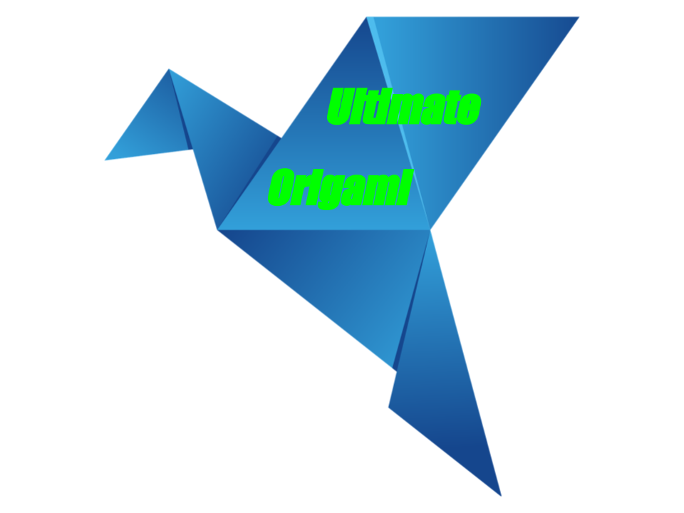

<html></html>
<head><title>Ultimate Origami</title>
    <link rel="stylesheet" type="text/css" href="style.css">
</head>
<body>
    <div class="top">
    <h1>Ultimate Origami</h1>
    <a href="about-us.html">About Us</a>
    <a href="follow-us.html">follow us</a><br>
    
    <h2>Below are some basic designs for beginners</h2>
    <h2>Click on the origami design to see step by step instruction!</h2>
    <h4>Make sure to follow us - please visit the follow us page for more info</h4>
</div>
<div class="origami1">
    <div class ="camel">
        <br>
    <a href="https://origami.me/camel/" >
    <br>
    </a>
    <h3>facts about a Camel</h3><br>
    <h3>1. Camel is also known as Ships of the Desert</h3><br>
    <h3>2. They are related to Stenomylus</h3><br>
    <h3>3. They store water in their humps</h3>
    <h2>Camel</h2>
</div>
    <div class ="chameleon">
        <br>
    <a href="https://origami.me/chameleon/" >
    
</a>
    <h3>facts about a Chameleon</h3><br>
    <h3>1. Chameleons can change colors</h3><br>
    <h3>2. Chameleons are a type of lizard</h3><br>
    <h3>3. Chameleons often live in rainforests like the amazon</h3>
    <h2>Chameleon</h2>
</div>
    <div class ="cicada">
        <br>
    <a href="https://origami.me/flying-cicada/">
    
</a>
    <h3>facts about a Flying Cicada</h3><br>
    <h3>1. These insects are often incorrectly referred to as locusts, even though they are unrelated.</h3><br>
    <h3>2. Chameleons are a type of large insect</h3><br>
    <h3>3. Cicada is often known for the buzzing noice they make</h3>
    <h2>Cicada</h2>
</div>
</div>
<div class= "origami2">
    <div class ="panda">
        <br>
    <a href="https://origami.me/panda/" >
        
</a>
    <h3>facts about a Panda</h3><br>
    <h3>1. Pandas are one of the very few animals to resist the chemicals bamboo</h3><br>
    <h3>2. Pandas live in China</h3><br>
    <h3>3. Pandas are endangered</h3>
    <h2>Panda</h2>
    </div>
<div class="pigeon">
    <br>
    <a href="https://origami.me/pigeon/">
        
</a>
    <h3>facts about a Pigeon</h3>
    <h3>1. Pigeons are common birds</h3><br>
    <h3>2. Pigeons live all over the world</h3><br>
    <h3>3. Pigeon are some times considered pets</h3>
    <h2>Pigeon</h2>
</div>
    <div class="teddy">
        <br>
    <a href="https://origami.me/teddy-bear/">
        
</a>
    <h3>facts about a Teddy Bear</h3><br>
    <h3>1. Kids to Grown-ups, all love this cuddle-able doll</h3><br>
    <h3>2. Named after President Theodore "Teddy" Roosevelt</h3><br>
    <h3>3. Retail sales of stuffed plush animals including teddy bears totaled $1.25 billion in 2020</h3>
    <h2>Teddy</h2>
</div></div>

</body>